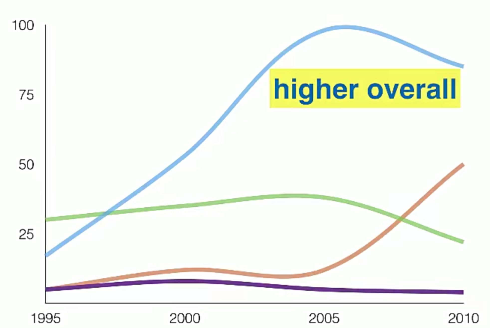
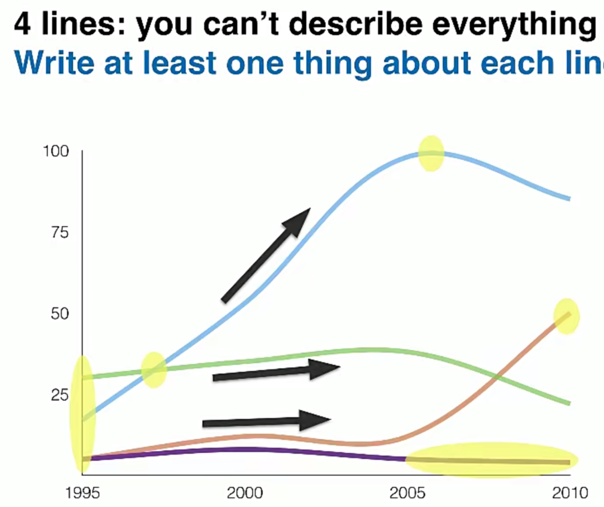
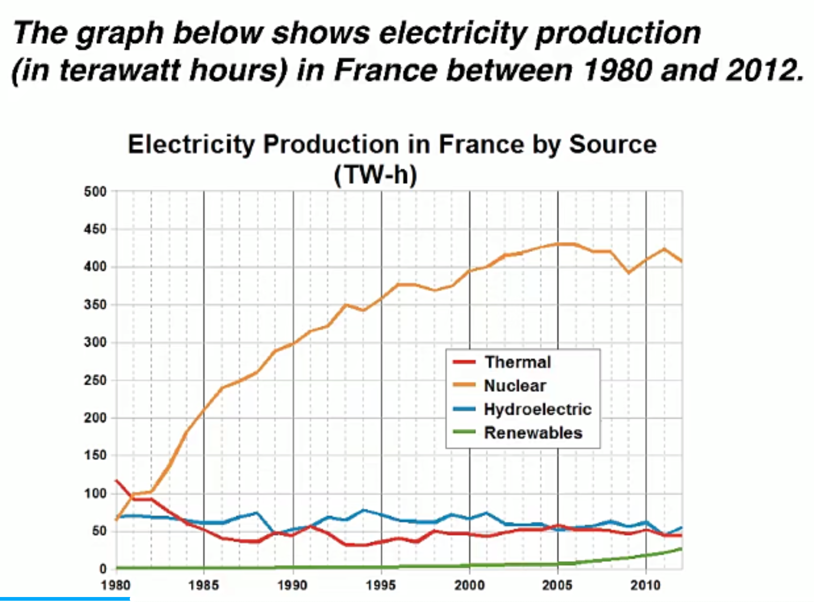

Line graphs show numbers changing over a period of time
A line graph always has 2,3,4,5 lines on a graph. And your job is to compare the lines, not decribe them sepratately.
Summary
First, make a very general comparison. (Overview)
Just like the blue line is the highest. Very very general

Second, compare the lines at specific points. (Details)
The yellow parts:

Example

Introduction: change the order and key words
The line graph compares the amount of electricity produced in France using 4 different sources of power over a period of 32 years.
Overview: 2 sentences, 2 main points
It is clear that nuclear power was by far the most important means of electricity generation over the period shown. Renewables provided the lowest amount of electricity in each year.
Details: 2 paragraghs, compare the lines
Paragragh 3: comparison with the start
In 1980, thermal power stations were the main source of electricity in France, generating around 120 terawatt hours of power. Nuclear and hydroelectric power stations produced just under 75 terawatt hours of electricity each, and renewables provided a negligible amount. Just one year later, nuclear power overtook thermal power as the primary source of electricity.
Tips when describing numbers
Can’t write:
- Nuclear was 75 TW-h of electricity.
- Nuclear produced 75 TW-h of electricity.
Should write:
- Nuclear power was used to produce …
- Nuclear power stations produced …
Not just take words from graph, think more clearfully.
Paragragh 4: describle tendency, peak
Between 1980 and 2005, electricity production from nuclear power rose dramatically to a peak of 430 terawatt hours. By contrast, the figure for thermal power fell to only 50 terawatt hours in 1985, and remained at this level for the rest of the period. Hydroelectric power generation remained relatively stable, at between 50 and 80 terawatt hours, for the whole 32-year period, but renewable electricity production saw only a small rise to approximately 25 terawatt hours by 2012.
Vocabulary
- amount of electricity produced
- source of / provided / generating
- means of electricity generation
- over a period of / over the period shown
- by far the most important
- a negligible amount
- nuclear power overtook thermal power
- as the primary source of electricty
- rose dramatically to a peak of
- by contrast
- the figure for nulcear power
- remained at this level, remained relatively stable
- saw only a small rise
- approximately 25